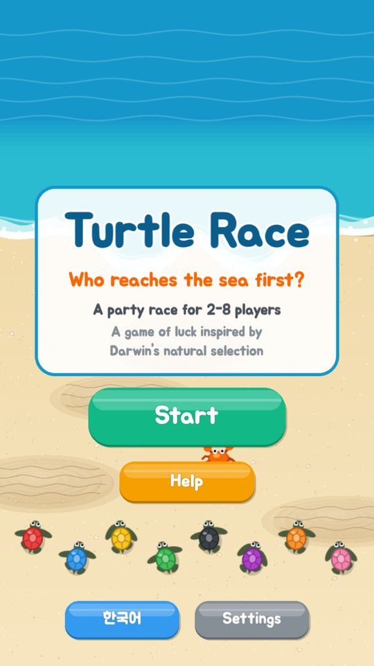
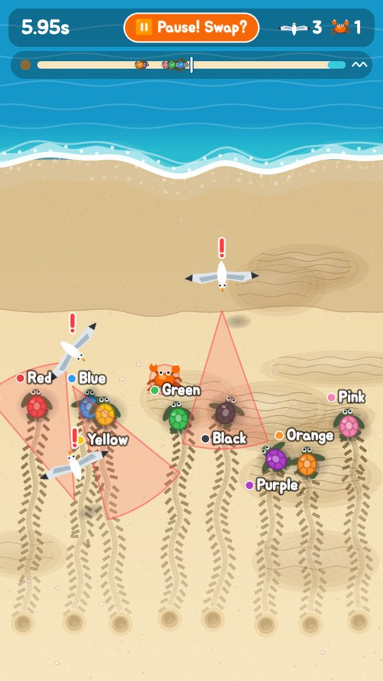
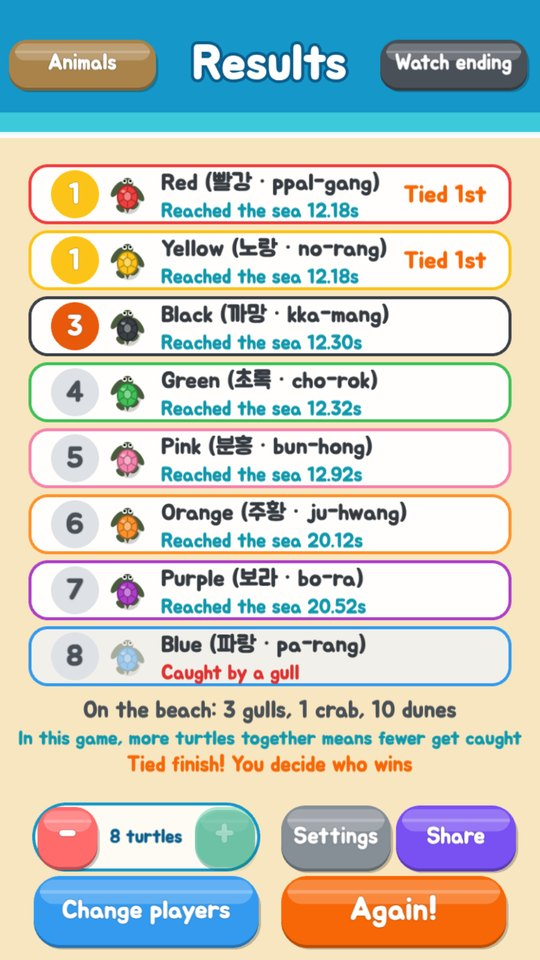
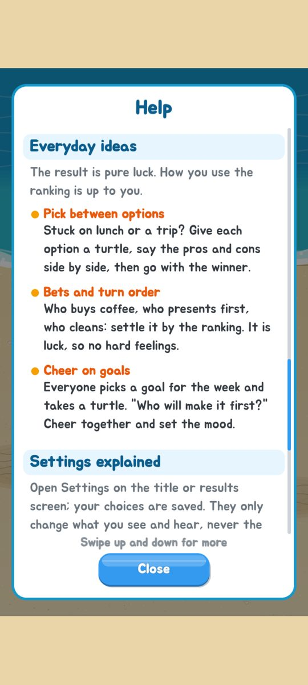

Sandscram is a game of luck for 2–8 people, played together on one phone.
Hatchling turtles that came up around the same time on the same beach run for the sea together, but ahead of them, predators like gulls and crabs are waiting. Sand dunes rise here and there and slow them down, giving those predators a better chance at a meal. But if you’re lucky and a wave rushes in right in front of you, your turtle can slip safely into the sea and live for decades.
Aside from one chance, before the leader reaches the halfway point, to pause and swap the turtle you first picked, there are no other controls.
Once the ranking is in, how you use it is up to you — picking the lunch menu, choosing who buys coffee after lunch, deciding who does the cleaning, and so on. Share the results so you’ve got proof. And be sure to watch the ending at least once. A twist is waiting.
Screenshots




How to play
- Tap Start and choose how many turtles race (2 to 8).
- Each player takes one turtle.
- After the countdown the turtles leave the nest together and run to the sea. No controls, just cheer!
- Once per race, until the leader is halfway across the sand, anyone can use the 'Pause! Swap?' button to pause.
- The earlier a turtle reaches the sea, the higher it ranks; caught turtles go to the bottom. Your group decides what the ranking is for.
Ways to use it
- Pick the lunch menu
- Pick who buys coffee after lunch
- Decide turns or chores
FAQ
- What is Sandscram?
- A luck-based party game for 2 to 8 people sharing one phone. Sea turtle hatchlings leave one nest together and race to the sea, and the order they reach the water is the ranking. Gulls, crabs and deep-rushing waves reshuffle it.
- How many people can play?
- From 2 to 8. Choose 2 to 8 turtles and each person takes one. You only need one phone.
- Do I need to control anything?
- No. There are no controls; you just cheer. Once per race, until the leader is halfway across the sand, anyone can use the 'Pause! Swap?' button to pause.
- How long is one race?
- About 15 seconds on average, plus a 3-second countdown before the start.
- Does skill or the turtle you pick affect the result?
- Barely. Turtle speeds differ by only ±4%, and speed has almost no link to survival. In a 4,000-race test, every starting lane won within 2.5 percentage points of its expected share. 'More turtles together means fewer get caught' is a rule of this game, not a claim about real sea-turtle ecology.
- What can I use it for?
- Pick the lunch menu, pick who buys coffee after lunch, or decide turns or chores.
- What happens in a tie?
- If two turtles show the same time on screen (to 0.01 seconds), they share the rank. Players settle it themselves, for example with another race or rock-paper-scissors.
- Does it need an internet connection?
- No. The game runs offline. Sharing the results picture uses the connection of the app you share to.
- How is it related to Darwin's natural selection?
- It is a game of luck inspired by natural selection. Real hatchlings leave the nest in a group and run for the sea. On the beach they may meet animal predators such as gulls and crabs. The game simplifies this, and luck decides the result. Real hatchlings mostly emerge at night; the game shows daytime so the race is easy to watch.
- Which animals appear?
- Olive ridley sea turtles (Lepidochelys olivacea), ghost crabs (genus Ocypode) and gulls (Laridae), drawn in a simple style inspired by real beach ecology. With luck, they live for decades.
- What is the ending about?
- A short ending may follow the results. After making it across the beach together, risks such as ghost nets and plastic can continue in the sea. We keep animal predators (gulls and crabs) separate from trash hazards, and we do not call people or children predators. The theme is: 'They made it to the sea together. Now let’s keep the sea safe together.' Many sea animals may mistake plastic for food and swallow it.
- Which languages are supported?
- The interface is in Korean and English. Turtles are named after their shell colors, shown in 17 languages to match the device language.
- Does it collect personal data?
- The current version collects no personal data. Only settings such as sound volume are stored on the phone.
Animals in this game
Olive ridley sea turtle (Lepidochelys olivacea), ghost crab (genus Ocypode) and gulls (Laridae), drawn in a simple style inspired by real beach ecology.